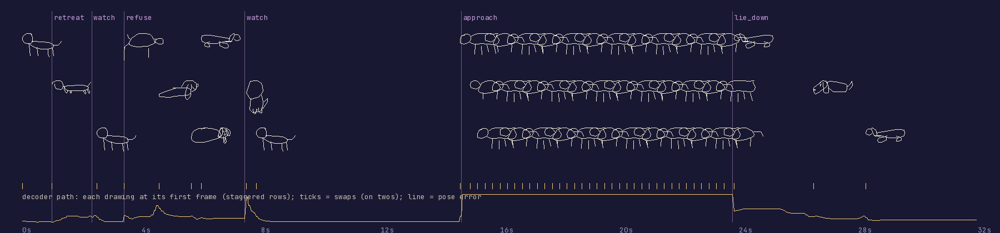

PAE-02 · SCION 38 · revision: round 3 (critic round 2 repairs)
Dynamic Pose Selection: the drawing-library swarm
Critic verdict
Round 1 and round 2: DOES NOT PASS (reviews/). Round 3 repairs made and measured; awaiting the critic.Next blocking failure
Walk = stride pair #2830/#639 alternating on sixes, x only at swaps. Heads share a shape but sit at the back line (level), not below it.
Repair condition: a viewer reads the circle-headed dog as one dog stepping in.Invariants (measured, checks.json)
- Six choices on screen within ±0.25 s (largest: stopping the backing, +0.25 by motion, +0.17 by swap); check_handmade ALL OK.
- Never enters: centroid ≥ 0.579 m; ends 40% inside the door frame, 44% of its ink in the lit doorway.
- Call → retreat, reach → back turned; sit, open door, low hand, soft voice all before the approach.
- x follows the score: approach 3.404 m measured vs 3.406 m.
Artifacts
- film.mp4 · trace.json · checks.json · assets.json · method.md · ledger.jsonl
- Pose-state library: pose_library.json, library.png
- Decoded pose schedule: pose_schedule.json, schedule.png
- Error histogram: error-histogram.png
- Scoring functions and decoder: build/03_decode.py; rebuild:
sh build/make.sh


